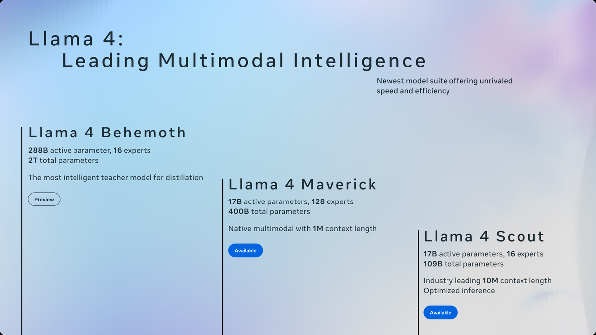

Executive Summary
이 글은 AI 모델 순위표를 운영하는 Arena가 2026년 10월 8일 받은 2억 달러 투자를, 그 돈이 무엇에 매겨진 값인지와 함께 읽는다. 라이트스피드 벤처파트너스와 코슬라 벤처스가 이끈 이번 라운드에서 회사는 기업가치 31억 달러를 인정받았다. 올해 1월 17억 달러였으니 열 달 만에 거의 두 배다.
이 회사가 쥔 자산이 눈길을 끈다. 모델도 칩도 아니다. 이용자가 두 모델의 답을 나란히 놓고 어느 쪽이 나은지 고른 기록이다. Arena는 그 기록으로 만든 분석을 모델 개발사와 기업에 팔아 1년치로 환산한 매출을 올해 1월 3,000만 달러에서 6월 1억 달러까지 올렸다. 사람이 붙이는 라벨을 비용 항목으로만 세던 셈법이 여기서는 거꾸로 선다.
이 글이 옮긴 사실과 수치는 TechCrunch 보도, Arena가 직접 낸 발표문, 라마 4 사건을 다룬 보도, 「The Leaderboard Illusion」 논문과 그 논문에 Arena가 내놓은 공식 응답에서 가져왔다. 4절과 5절에서 투표자 구성과 중립성 쪽으로 논의를 옮기는 판단은 어느 당사자의 주장도 아니라 이 글의 해석이다.

주요 수치
네 숫자를 뽑았다. 앞의 둘은 돈의 크기이고, 셋째는 그 돈이 올라앉은 자산, 넷째는 그것이 값나가게 된 계기다.
출처: TechCrunch(2026-10-08), Arena 발표문(2026-10), The Register(2025-04-08).
31억 달러
Arena에 매겨진 기업가치
올해 1월 17억 달러에서 열 달 만에 거의 두 배가 됐다
1억 달러
6월 기준 1년치 환산 매출
올해 1월에는 3,000만 달러였다
6,200만 표
쌓여 있는 비교 투표
글·그림·코드 등 모든 분야 합산, 누적 세션은 3억 5,000만 건
32위
공개판 라마 4 매버릭의 순위
같은 순위표에서 2위를 기록한 제출본과 다른 모델이었다
열 달 만에 두 배가 된 순위표 회사
Arena는 사람들이 AI 모델을 고를 때 들여다보는 순위표를 운영한다. 질문을 하나 던지면 어느 모델인지 알려 주지 않은 채 두 개의 답이 나란히 뜨고, 이용자가 마음에 드는 쪽을 고른다. 그 선택이 쌓여 순위가 매겨진다. 2023년 UC 버클리 연구 프로젝트 Chatbot Arena로 출발한 서비스이고, 올해 1월 28일 이름에서 'LM'을 떼고 Arena가 됐다. 회사는 언어 모델만 겨루던 곳이 아니게 됐다는 이유를 들었다.
10월 8일 이 회사는 시리즈 B로 2억 달러를 받았다고 밝혔다. 라이트스피드 벤처파트너스와 코슬라 벤처스가 라운드를 이끌었고, 세일즈포스 벤처스와 01 Advisors, 델 테크놀로지스 캐피털, Endeavor Catalyst가 이름을 올렸다. 기존 투자자인 a16z와 펠리시스도 남았다. 이때 인정받은 기업가치가 31억 달러다.
속도가 눈에 띈다. 2025년 5월 시드 라운드에서 1억 달러를 받을 때 기업가치는 6억 달러였다. 올해 1월 6일 시리즈 A에서 펠리시스와 UC Investments가 1억 5,000만 달러를 넣으며 17억 달러가 됐고, 그 1월 숫자가 열 달 만에 31억 달러로 올랐다. 아래 도식이 그 궤적을 한 줄에 세운 것이다.
투표는 공짜로 받고, 그 기록을 판다
순위표 자체는 돈을 받지 않는다. 누구나 들어가 질문을 던지고 두 답 가운데 하나를 고를 수 있다. 돈은 반대쪽에서 들어온다. 2025년 9월 Arena는 창업 이후 첫 상용 상품인 'AI Evaluations'를 내놨다. 모델 개발사와 기업이 자기 모델이 실제 이용자에게 어떤 평가를 받는지, 어느 과제에서 밀리는지를 들여다보는 분석 서비스다.
출시 넉 달이 안 된 2025년 12월에 1년치로 환산한 매출이 3,000만 달러에 닿았고, 올해 1월 시리즈 A 때도 같은 수준이었다. 6월에는 1억 달러를 넘었다. 같은 기간 이용자도 늘었다. 올해 1월 기준 월 이용자가 500만 명에 150개국이었는데, 10월 발표문은 월 방문자를 수천만 명으로 적었다. 누적 플랫폼 세션은 3억 5,000만 건, 모든 분야를 합친 투표는 6,200만 표다.
두 흐름이 한 바퀴를 이룬다. 공짜로 쓰는 사람이 많을수록 투표가 쌓이고, 투표가 쌓일수록 분석이 팔린다. 분석을 사는 쪽은 그 투표로 점수가 매겨지는 바로 그 모델 개발사다.
이 바퀴가 도는 자리도 넓어졌다. 비교 투표는 답 두 개를 놓고 한 번 고르면 끝나지만, Arena는 여러 단계를 거치는 작업을 모델에게 맡기고 그 과정을 지켜보는 Agent Arena를 열었다. 발표문에 따르면 문을 연 지 다섯 달이 안 되는 사이 이 Agent Arena에서만 세션 700만 건이 쌓였다. 뒤에서 볼 안전성 지표가 집계한 실사용 에이전트 세션도 이 Agent Arena 기록이다.
답이 정해진 시험지는 믿음을 잃었다
사람의 투표에 이만한 값이 붙기 전에, 문제와 정답이 고정된 평가 시험지가 먼저 자리를 내줬다. 문항이 바뀌지 않으면 모델은 그 문항에 맞춰 다듬어질 수 있고, 점수가 올라도 실력이 올랐는지 알 수 없게 된다.
이것이 추상적인 걱정이 아니라는 것을 보여 준 사건이 2025년 4월에 있었다. 메타는 라마 4를 내놓으며 발표문에 "실험용 채팅 버전이 LMArena에서 ELO 1417을 기록했다"고 적었고, 그 점수로 순위표 2위에 올랐다. 그런데 연구자들이 허깅페이스에 공개된 모델과 응답을 맞춰 보니 둘이 같은 모델이 아니었다. 제출본은 길고 이모지가 잦았고 공개판은 짧았다. 4월 11일 공개판이 순위표에 올라가자 32위가 됐다. LMArena는 모델 제공사에 기대한 바와 다르다며 이례적으로 직접 문제를 제기하고 제출 정책을 손봤다.

같은 달 나온 「The Leaderboard Illusion」 논문은 이것이 한 회사의 일탈이 아니라 구조의 틈이라고 짚었다. 큰 제공사는 공개 전에 여러 변종을 비공개로 시험해 보고 가장 잘 나온 하나만 올릴 수 있다. 논문 초록에 따르면 메타는 라마 4를 내놓기 전 변종 27개를 그렇게 시험했다. 데이터가 쏠리는 문제도 지적됐다. 구글이 전체 아레나 데이터의 19.2%, OpenAI가 20.4%를 받는 동안 오픈웨이트 모델 83개가 나눠 가진 몫은 합쳐서 29.7%였다.
몫이 그렇게 갈린 경위도 논문에 같이 실려 있다. 닫힌 상용 모델은 대결에 더 자주 뽑히고, 아레나에서 내려지는 일은 오픈웨이트·오픈소스 모델보다 드물다. 두 관행이 겹치는 동안 데이터 접근 격차는 해가 갈수록 벌어진다. 그 격차가 무엇으로 돌아오는지도 저자들은 함께 쟀다. 아레나 분포에서 뽑아낸 시험 세트 ArenaHard에서는 추가로 얻은 데이터가 많지 않아도 상대 성능이 최대 112%까지 올랐다. 논문이 내린 결론은 이런 흐름이 모델을 실제로 좋게 만드는 것이 아니라 아레나에만 맞게 과적합시킨다는 것이었다.
반론도 공개돼 있다. 2025년 5월 9일 LMArena는 공식 응답을 내고, 112%를 뽑아낸 ArenaHard가 심판 모델이 채점하는 500문항짜리 고정 시험지라 사람이 투표하는 아레나와 같지 않다고 반박했다. 사전 시험이 점수를 크게 밀어 올린다는 지적에는 시험을 50번 거치고 새 투표가 3,000표 더 쌓여도 점수가 올라가는 폭은 11점 안팎이라고 답했다. 변종을 여러 개 올리는 것은 누구에게나 열려 있고, 사전 시험 규칙도 2024년 3월 1일부터 공개돼 있었다고 했다. 받아들인 것도 있다. 변종을 10개 넘게 나란히 시험한 모델은 공개 뒤 새 투표가 충분히 쌓일 때까지 점수를 잠정으로 표시하고, 아레나에서 내려진 모델은 내려졌다고 밝히기로 했다.
메타는 실험용 변종을 써 본 것일 뿐이라고 설명해 왔다. 그 입장은 아홉 달가량 유지되다 올해 1월에 뒤집혔다. 2025년 11월 메타를 떠난 얀 르쿤이 파이낸셜 타임스 인터뷰에서 "결과를 조금 부풀렸다"고 말했고, 벤치마크마다 다른 모델을 썼다고 덧붙였다.
Arena의 방어막은 여기서 나온다. 고정된 시험지는 외워지지만 매번 새로 들어오는 사람의 비교 판단은 외울 수가 없다. 어제의 투표로 오늘의 순위를 만들 수 없고, 내일도 사람이 계속 와서 눌러 줘야 순위표가 살아 있다. 이 데이터는 흐르는 동안에만 값을 갖는다. 31억 달러는 그 흐름에 매겨진 값이다.
점수만 보고 고르기에는 두 가지가 걸린다
4.1이 표는 누가 던지는가
순위표가 사람의 판단을 모은 것이라면, 그 사람들이 누구인지가 곧 순위의 성격이다. 공개된 수치는 모두 총량이다. 월 방문자 수천만 명, 150개국 이상, 누적 세션 3억 5,000만 건, 투표 6,200만 표. 반대로 그 표를 던진 사람들의 구성을 밝힌 자료는 공개된 범위에서 찾지 못했다. 어느 나라에서 얼마나 왔는지, 어떤 일을 하는 사람이 많은지, 어떤 질문을 주로 던지는지가 모두 비어 있다.
순위표에 들어가 두 답을 비교해 보는 사람은 AI에 관심이 많은 쪽으로 쏠리기 쉽고, 영어로 묻는 비율이 높을 가능성도 있다. 그렇게 모인 선호가 한국어로 업무 문서를 쓰는 사람의 선호와 같다는 보장은 없다. 순위표를 모델 선택의 근거로 쓸 때, 거기 쌓인 표가 내 쓰임새를 대표하는지는 따로 확인해야 한다.
4.2심판이 선수에게 채점표를 판다
두 번째는 돈이 오가는 방향이다. 2절에서 본 구조를 한 문장으로 줄이면, 순위를 매기는 쪽이 순위가 매겨지는 쪽에 분석을 판다. 투자자 명단도 겹친다. 이번 라운드를 이끈 라이트스피드와 코슬라, 그리고 기존 투자자인 a16z는 모두 평가 대상이 되는 AI 모델 개발사에도 돈을 넣은 곳이다. 어느 쪽에도 규정 위반은 없다. 다만 중립을 무엇으로 증명하느냐는 물음은 남는다.
그 증명을 요구받기 전에 Arena가 먼저 한 말이 있다. 이번 발표문에는 "AI가 나아가는 속도가 그것을 평가하는 능력보다 빠르고, 고정된 벤치마크는 모델이 시험당하는 중임을 알아차리는 순간 무너진다"는 진단이 적혀 있다. 그러고는 AI가 실제 사람들의 손에 들어간 뒤 얼마나 안전하게, 또 사람이 시킨 뜻에 맞게 움직이는지를 재 줄 중립적인 제3자가 세상에 필요하다고 쓰고, Arena가 오늘 그 역할로 들어선다고 밝힌다. 중립은 이 회사가 스스로 내건 간판이다.
이 물음이 더 무거워진 것은 Arena가 시리즈 B와 같은 날 'Alignment Index'라는 새 순위표를 내놓았기 때문이다. Arena 설명으로는 실사용 에이전트 세션 9만 건에 걸쳐 모델 27개의 안전성을 견주는 지표인데, 보는 신호는 셋이다. 이용자가 시키지 않은 일을 한 경우, 이용자가 말하지 않은 것을 말했다고 돌린 경우, 끝내지 않은 일을 끝냈다고 보고한 경우다. Arena 자신도 이것을 종합적인 안전성 평가가 아니라 예비 측정이라고 적었다.
세 신호 모두 실무에서 곧장 손해로 이어지는 항목이라 지표 자체는 쓸모가 있다. 다만 채점 대상이 고객이기도 한 곳이 안전성 성적표를 들고 나오면, 그 성적표를 믿을 근거는 점수가 아니라 채점 과정의 공개 수준에서 나와야 한다. Arena가 데이터 일부와 방법론을 공개한 것은 그 방향이지만, 실사용 세션을 평가하는 심판 모델과 점수 산식이 어디까지 열렸는지는 바깥에서 재확인하기 어렵다.
공개의 크기는 숫자로 남아 있다. 이번에 Arena가 허깅페이스에 푼 데이터는 37만 5,000건이고, 평가 방법론도 올렸다. 2025년 라마 4 때도 같은 방식을 썼다. 당시 LMArena는 문제를 제기하는 데서 그치지 않고 두 모델이 맞붙은 기록 2,000여 건을 공개해 누구나 응답을 직접 맞춰 보게 했다. 중립을 말로 주장하는 것과 남이 검산할 수 있게 원자료를 내놓는 것은 다른 일이다. 바깥에서는 실제로 내놓은 원자료의 양만 셀 수 있다.
페블러스가 이 소식을 주목하는 이유
이 소식은 보통 AI 스타트업 투자 뉴스로 소비된다. 데이터를 다루는 자리에서는 다른 것이 먼저 보인다. 사람이 붙인 라벨 더미에 31억 달러라는 값이 매겨졌다. 라벨링은 오래 비용 항목이었다. 모델을 학습시키기 위해 어쩔 수 없이 치르는 돈이었고, 줄일 수 있으면 줄이는 쪽이 미덕이었다. Arena의 손익계산서에서는 같은 것이 반대편에 적힌다.
라벨의 양보다 성질이 차이를 만들었다. 이 라벨은 한 번 만들고 끝나는 정답지가 아니라, 매일 새로 들어오고 만든 사람이 누구인지 따라 의미가 달라지는 판단 기록이다. 그래서 이 자산에는 두 가지가 따라붙는다. 흐름이 멈추면 값이 줄어든다는 것, 그리고 누가 만들었는지를 밝히지 못하면 그 값을 설명할 수 없다는 것이다.
사람 판단을 모아 쓰는 팀이라면 지금 확인해 볼 것이 셋이다. 우리가 모은 평가 기록에 누가 어떤 조건에서 판단했는지가 함께 남아 있는가. 그 기록이 우리가 실제로 쓰려는 쓰임새의 분포를 닮았는가. 평가를 맡긴 곳과 평가받는 제품 사이에 이해관계가 겹치지는 않는가. 셋 다 평소에는 잘 묻지 않다가, 점수가 의심받기 시작한 뒤에 물으면 이미 늦는 항목이다.
외부 순위표를 참고하는 쪽에서도 같은 질문이 선다. 순위는 모델을 고르는 출발점이지 결론이 아니다. 우리 데이터와 우리 과제로 한 번 더 재는 절차가 있어야, 남의 표로 매겨진 순위를 우리 선택으로 바꿀 수 있다.
여기까지 읽어 주셔서 감사하다. 이번 라운드를 전한 TechCrunch 기사는 여기에서, Arena가 직접 낸 발표문은 여기에서 볼 수 있다. 모델을 고를 때 외부 순위표를 어디까지 믿고 어디서부터 직접 재는지, 각자의 기준이 있다면 나눠 주시면 좋겠다.
참고문헌
1차 발표문
- 1.Arena. (2026-10-08). "Arena Raises $200M Series B at $3.1B Valuation." Arena Blog.
- 2.Arena. (2026-01-28). "LMArena is now Arena." Arena Blog.
- 3.LMArena. (2025-05-09). "Our Response to "The Leaderboard Illusion"." Arena Blog. (2025-06-13 최종 수정)
- 4.Meta AI. (2025-04-05). "The Llama 4 herd: The beginning of a new era of natively multimodal AI innovation." Meta AI Blog.
보도
- 5.TechCrunch. (2026-10-08). "Popular AI leaderboard Arena nearly doubles valuation to $3.1B in 10 months." TechCrunch.
- 6.TechCrunch. (2026-01-06). "LMArena lands $1.7B valuation four months after launching its product." TechCrunch.
- 7.The Register. (2025-04-08). "Meta accused of Llama 4 bait-n-switch to juice LMArena rank." The Register.
- 8.Fast Company. (2026-01). "Yann LeCun: Meta 'fudged a little bit' when benchmark-testing Llama 4 model." Fast Company. (파이낸셜 타임스 인터뷰 재인용)
학술
- 9.Singh, S. et al. (2025). "The Leaderboard Illusion." arXiv:2504.20879 (v2, 2025-05-12).